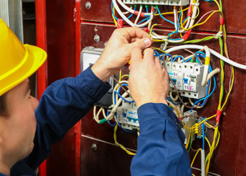

ELETRICISTA
Montar, ajustar, instalar, manter e reparar aparelhos e equipamentos elétricos e, tais como motores, dínamos, instrumentos, aparelhos transmissores e receptores de sinais, aparelhos eletro-doméstico, computadores e equipamentos auxiliares e aparelhos de controle e regulagem de corrente.
Está precisando de um desses serviços? Entre em contato com algum eletricista pelo nosso site, clique no botão abaixo e escolha o seu.